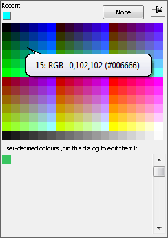

The Web Safe palette contains the 216 web-safe colours, plus an additional 18 grey-scale colours, as shown below. User-defined colours are not supported for this palette.
The web safe colours are uniformly distributed in RGB space, where R, G and B values range from 0 to 255; the palette is formed by incrementing R, G and B systematically in units of 51. Thus the web-safe sequence proceeds as follows:
| Red | Green | Blue | |
| 0 | 0 | 0 | (black) |
| 0 | 0 | 51 | |
| 0 | 0 | 102 | |
| 0 | 0 | 153 | |
| 0 | 0 | 204 | |
| 0 | 0 | 255 | |
| 0 | 51 | 0 | |
| 0 | 51 | 0 | |
| 0 | 51 | 51 | |
| ... | |||
| 255 | 255 | 255 | (white) |
 When to use the Web Safe Palette
When to use the Web Safe Palette
The Web Safe palette has the advantage that the 216 standard colours defined above are guaranteed to be supported without dithering on Windows and Macintosh platforms, and in the Internet Explorer and Netscape browsers, hence the name. The two major disadvantages are as follows:
- The human eye does not have a linear response to changes in RGB space, so that many of the web safe colours appear very similar to each other. This is particularly noticeable in the green colours. Use the HSV palette if you wish to have better discrimination in colours across RGB space, or the Pastel palette if you need a wider range of paler colours.
- Few of the web safe colours correspond to named colours. Colour names have been defined by artists over the centuries and have been codified with RGB values for use in computer applications. Use the Artistic palette if you wish to use named colours.
Use the web safe palette whenever you cannot be sure that all users of the software will have access to 16-bit or 24-bit colour.
Copyright © 1998 to 2025 by Envitia Group PLC.